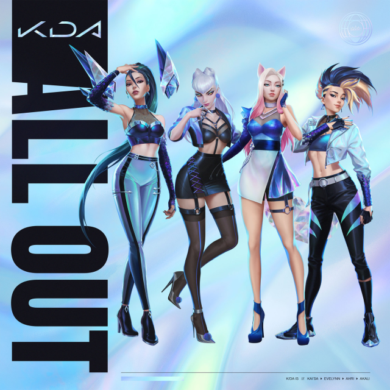

All Out
K/DA
- Released: 6 November 2020
- Studio: Riot Games
- Genre: K-Pop
- Lenght: 16:19
- Producer: Riot Games
ALL OUT, K/DA's first mini album, which came with a total of 5 songs. Before its release, the video clip of MORE was known, Main theme of the mini album and with which they performed at the World Cup final on October 31st. Also for this mini album and the performance of K / DA there was collaboration with Seraphine, the new character from League Of Legends.
